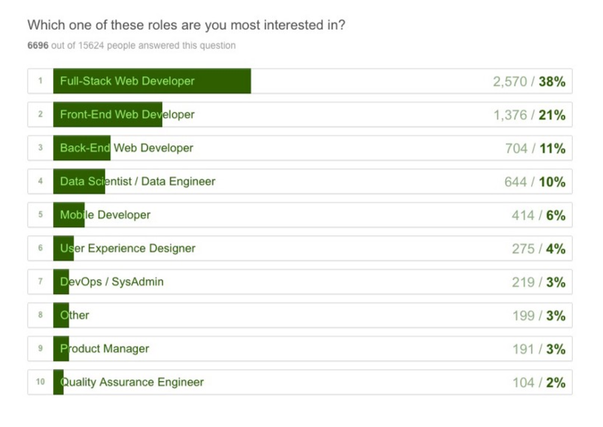
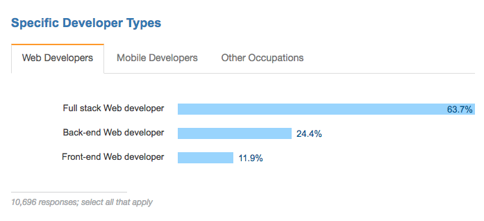

<!DOCTYPE HTML>
<html lang="" >
    <head>
        <meta charset="UTF-8">
        <meta content="text/html; charset=utf-8" http-equiv="Content-Type">
        <title>通才/全栈之神 · GitBook</title>
        <meta http-equiv="X-UA-Compatible" content="IE=edge" />
        <meta name="description" content="">
        <meta name="generator" content="GitBook 3.2.3">
        
        
        
    
    <link rel="stylesheet" href="../gitbook/style.css">

    
            
                
                <link rel="stylesheet" href="../gitbook/gitbook-plugin-highlight/website.css">
                
            
                
                <link rel="stylesheet" href="../gitbook/gitbook-plugin-search/search.css">
                
            
                
                <link rel="stylesheet" href="../gitbook/gitbook-plugin-fontsettings/website.css">
                
            
        

    

    
        
        <link rel="stylesheet" href="../styles/website.css">
        
    
        
    
        
    
        
    
        
    
        
    

        
    
    
    <meta name="HandheldFriendly" content="true"/>
    <meta name="viewport" content="width=device-width, initial-scale=1, user-scalable=no">
    <meta name="apple-mobile-web-app-capable" content="yes">
    <meta name="apple-mobile-web-app-status-bar-style" content="black">
    <link rel="apple-touch-icon-precomposed" sizes="152x152" href="../gitbook/images/apple-touch-icon-precomposed-152.png">
    <link rel="shortcut icon" href="../gitbook/images/favicon.ico" type="image/x-icon">

    
    <link rel="next" href="interview-q.html" />
    
    
    <link rel="prev" href="team.html" />
    

    </head>
    <body>
        
<div class="book">
    <div class="book-summary">
        
            
<div id="book-search-input" role="search">
    <input type="text" placeholder="Type to search" />
</div>

            
                <nav role="navigation">
                


<ul class="summary">
    
    

    

    
        
        
    
        <li class="chapter " data-level="1.1" data-path="../">
            
                <a href="../">
            
                    
                    Introduction
            
                </a>
            

            
        </li>
    
        <li class="chapter " data-level="1.2" data-path="../what-is-a-FD.html">
            
                <a href="../what-is-a-FD.html">
            
                    
                    什么是前端开发人员？
            
                </a>
            

            
        </li>
    
        <li class="chapter " data-level="1.3" data-path="../recap.html">
            
                <a href="../recap.html">
            
                    
                    2017 年前端开发回顾
            
                </a>
            

            
        </li>
    
        <li class="chapter " data-level="1.4" data-path="../2018.html">
            
                <a href="../2018.html">
            
                    
                    2018 年的期待...
            
                </a>
            

            
        </li>
    
        <li class="chapter " data-level="1.5" data-path="../practice.html">
            
                <a href="../practice.html">
            
                    
                    第一部分：前端实践
            
                </a>
            

            
            <ul class="articles">
                
    
        <li class="chapter " data-level="1.5.1" data-path="types-of-front-end-dev.html">
            
                <a href="types-of-front-end-dev.html">
            
                    
                    前端工作职位
            
                </a>
            

            
        </li>
    
        <li class="chapter " data-level="1.5.2" data-path="tech-employed-by-fd.html">
            
                <a href="tech-employed-by-fd.html">
            
                    
                    通用的 Web 技术收录
            
                </a>
            

            
        </li>
    
        <li class="chapter " data-level="1.5.3" data-path="skills.html">
            
                <a href="skills.html">
            
                    
                    前端开发技能
            
                </a>
            

            
        </li>
    
        <li class="chapter " data-level="1.5.4" data-path="fd-dev-for.html">
            
                <a href="fd-dev-for.html">
            
                    
                    前端开发人员开发了...
            
                </a>
            

            
        </li>
    
        <li class="chapter " data-level="1.5.5" data-path="team.html">
            
                <a href="team.html">
            
                    
                    前端开发团队
            
                </a>
            

            
        </li>
    
        <li class="chapter active" data-level="1.5.6" data-path="myth.html">
            
                <a href="myth.html">
            
                    
                    通才/全栈之神
            
                </a>
            

            
        </li>
    
        <li class="chapter " data-level="1.5.7" data-path="interview-q.html">
            
                <a href="interview-q.html">
            
                    
                    前端面试题
            
                </a>
            

            
        </li>
    
        <li class="chapter " data-level="1.5.8" data-path="jobboards.html">
            
                <a href="jobboards.html">
            
                    
                    前端工作板
            
                </a>
            

            
        </li>
    
        <li class="chapter " data-level="1.5.9" data-path="salaries.html">
            
                <a href="salaries.html">
            
                    
                    前端薪资
            
                </a>
            

            
        </li>
    
        <li class="chapter " data-level="1.5.10" data-path="making-fd.html">
            
                <a href="making-fd.html">
            
                    
                    前端开发者是怎样炼成的
            
                </a>
            

            
        </li>
    

            </ul>
            
        </li>
    
        <li class="chapter " data-level="1.6" data-path="../learning.html">
            
                <a href="../learning.html">
            
                    
                    第二部分：学习前端开发
            
                </a>
            

            
            <ul class="articles">
                
    
        <li class="chapter " data-level="1.6.1" data-path="../learning/self-direct-learning.html">
            
                <a href="../learning/self-direct-learning.html">
            
                    
                    自我导向学习
            
                </a>
            

            
            <ul class="articles">
                
    
        <li class="chapter " data-level="1.6.1.1" data-path="../learning/internet.html">
            
                <a href="../learning/internet.html">
            
                    
                    了解互联网/Web
            
                </a>
            

            
        </li>
    
        <li class="chapter " data-level="1.6.1.2" data-path="../learning/browsers.html">
            
                <a href="../learning/browsers.html">
            
                    
                    了解 Web 浏览器
            
                </a>
            

            
        </li>
    
        <li class="chapter " data-level="1.6.1.3" data-path="../learning/dns.html">
            
                <a href="../learning/dns.html">
            
                    
                    了解 DNS
            
                </a>
            

            
        </li>
    
        <li class="chapter " data-level="1.6.1.4" data-path="../learning/http-networks.html">
            
                <a href="../learning/http-networks.html">
            
                    
                    了解 HTTP/网络
            
                </a>
            

            
        </li>
    
        <li class="chapter " data-level="1.6.1.5" data-path="../learning/hosting.html">
            
                <a href="../learning/hosting.html">
            
                    
                    了解虚拟主机
            
                </a>
            

            
        </li>
    
        <li class="chapter " data-level="1.6.1.6" data-path="../learning/front-end.html">
            
                <a href="../learning/front-end.html">
            
                    
                    了解通用前端开发
            
                </a>
            

            
        </li>
    
        <li class="chapter " data-level="1.6.1.7" data-path="../learning/ui-design-patterns.html">
            
                <a href="../learning/ui-design-patterns.html">
            
                    
                    了解 UI/交互设计
            
                </a>
            

            
        </li>
    
        <li class="chapter " data-level="1.6.1.8" data-path="../learning/html-css.html">
            
                <a href="../learning/html-css.html">
            
                    
                    了解 HTML 和 CSS
            
                </a>
            

            
        </li>
    
        <li class="chapter " data-level="1.6.1.9" data-path="../learning/seo.html">
            
                <a href="../learning/seo.html">
            
                    
                    了解 SEO
            
                </a>
            

            
        </li>
    
        <li class="chapter " data-level="1.6.1.10" data-path="../learning/javascript.html">
            
                <a href="../learning/javascript.html">
            
                    
                    了解 JavaScript
            
                </a>
            

            
        </li>
    
        <li class="chapter " data-level="1.6.1.11" data-path="../learning/animation.html">
            
                <a href="../learning/animation.html">
            
                    
                    了解 Web 动画
            
                </a>
            

            
        </li>
    
        <li class="chapter " data-level="1.6.1.12" data-path="../learning/dom.html">
            
                <a href="../learning/dom.html">
            
                    
                    了解 DOM、BOM 和 jQuery
            
                </a>
            

            
        </li>
    
        <li class="chapter " data-level="1.6.1.13" data-path="../learning/fonts.html">
            
                <a href="../learning/fonts.html">
            
                    
                    了解 Web 字体、图标和图像
            
                </a>
            

            
        </li>
    
        <li class="chapter " data-level="1.6.1.14" data-path="../learning/accessibility.html">
            
                <a href="../learning/accessibility.html">
            
                    
                    了解可访问性
            
                </a>
            

            
        </li>
    
        <li class="chapter " data-level="1.6.1.15" data-path="../learning/web-api.html">
            
                <a href="../learning/web-api.html">
            
                    
                    了解 Web/浏览器 API
            
                </a>
            

            
        </li>
    
        <li class="chapter " data-level="1.6.1.16" data-path="../learning/json.html">
            
                <a href="../learning/json.html">
            
                    
                    了解 JSON
            
                </a>
            

            
        </li>
    
        <li class="chapter " data-level="1.6.1.17" data-path="../learning/templates.html">
            
                <a href="../learning/templates.html">
            
                    
                    了解 JS 模板
            
                </a>
            

            
        </li>
    
        <li class="chapter " data-level="1.6.1.18" data-path="../learning/static.html">
            
                <a href="../learning/static.html">
            
                    
                    了解静态站点生成器
            
                </a>
            

            
        </li>
    
        <li class="chapter " data-level="1.6.1.19" data-path="../learning/cs.html">
            
                <a href="../learning/cs.html">
            
                    
                    通过JS学习计算机科学
            
                </a>
            

            
        </li>
    
        <li class="chapter " data-level="1.6.1.20" data-path="../learning/front-end-apps.html">
            
                <a href="../learning/front-end-apps.html">
            
                    
                    了解前端应用程序体系结构
            
                </a>
            

            
        </li>
    
        <li class="chapter " data-level="1.6.1.21" data-path="../learning/data-api.html">
            
                <a href="../learning/data-api.html">
            
                    
                    了解 数据 API (例如 JSON/REST) 设计
            
                </a>
            

            
        </li>
    
        <li class="chapter " data-level="1.6.1.22" data-path="../learning/react.html">
            
                <a href="../learning/react.html">
            
                    
                    了解 React
            
                </a>
            

            
        </li>
    
        <li class="chapter " data-level="1.6.1.23" data-path="../learning/state.html">
            
                <a href="../learning/state.html">
            
                    
                    了解状态管理
            
                </a>
            

            
        </li>
    
        <li class="chapter " data-level="1.6.1.24" data-path="../learning/pwa.html">
            
                <a href="../learning/pwa.html">
            
                    
                    了解渐进式Web应用程序
            
                </a>
            

            
        </li>
    
        <li class="chapter " data-level="1.6.1.25" data-path="../learning/js-api.html">
            
                <a href="../learning/js-api.html">
            
                    
                    了解 JS API设计
            
                </a>
            

            
        </li>
    
        <li class="chapter " data-level="1.6.1.26" data-path="../learning/browser-dev-tools.html">
            
                <a href="../learning/browser-dev-tools.html">
            
                    
                    了解 Web 开发工具
            
                </a>
            

            
        </li>
    
        <li class="chapter " data-level="1.6.1.27" data-path="../learning/cli.html">
            
                <a href="../learning/cli.html">
            
                    
                    学习命令行
            
                </a>
            

            
        </li>
    
        <li class="chapter " data-level="1.6.1.28" data-path="../learning/node.html">
            
                <a href="../learning/node.html">
            
                    
                    学习 Node.js
            
                </a>
            

            
        </li>
    
        <li class="chapter " data-level="1.6.1.29" data-path="../learning/module.html">
            
                <a href="../learning/module.html">
            
                    
                    学习 JS 模块
            
                </a>
            

            
        </li>
    
        <li class="chapter " data-level="1.6.1.30" data-path="../learning/module-bundlers-loaders.html">
            
                <a href="../learning/module-bundlers-loaders.html">
            
                    
                    学习 JS 模块加载器/绑定器
            
                </a>
            

            
        </li>
    
        <li class="chapter " data-level="1.6.1.31" data-path="../learning/package-manager.html">
            
                <a href="../learning/package-manager.html">
            
                    
                    学习包管理器
            
                </a>
            

            
        </li>
    
        <li class="chapter " data-level="1.6.1.32" data-path="../learning/version-control.html">
            
                <a href="../learning/version-control.html">
            
                    
                    学习版本控制
            
                </a>
            

            
        </li>
    
        <li class="chapter " data-level="1.6.1.33" data-path="../learning/build.html">
            
                <a href="../learning/build.html">
            
                    
                    学习构建和任务自动化
            
                </a>
            

            
        </li>
    
        <li class="chapter " data-level="1.6.1.34" data-path="../learning/perf.html">
            
                <a href="../learning/perf.html">
            
                    
                    了解网站性能优化
            
                </a>
            

            
        </li>
    
        <li class="chapter " data-level="1.6.1.35" data-path="../learning/test.html">
            
                <a href="../learning/test.html">
            
                    
                    学习测试
            
                </a>
            

            
        </li>
    
        <li class="chapter " data-level="1.6.1.36" data-path="../learning/headless-browsers.html">
            
                <a href="../learning/headless-browsers.html">
            
                    
                    学习无头浏览器
            
                </a>
            

            
        </li>
    
        <li class="chapter " data-level="1.6.1.37" data-path="../learning/offline.html">
            
                <a href="../learning/offline.html">
            
                    
                    学习离线开发
            
                </a>
            

            
        </li>
    
        <li class="chapter " data-level="1.6.1.38" data-path="../learning/security.html">
            
                <a href="../learning/security.html">
            
                    
                    学习 Web/浏览器/应用程序安全
            
                </a>
            

            
        </li>
    
        <li class="chapter " data-level="1.6.1.39" data-path="../learning/multi-device-dev.html">
            
                <a href="../learning/multi-device-dev.html">
            
                    
                    了解多设备开发（例如RWD）
            
                </a>
            

            
        </li>
    

            </ul>
            
        </li>
    
        <li class="chapter " data-level="1.6.2" data-path="../learning/direct-learning.html">
            
                <a href="../learning/direct-learning.html">
            
                    
                    定向学习
            
                </a>
            

            
            <ul class="articles">
                
    
        <li class="chapter " data-level="1.6.2.1" data-path="../learning/courses.html">
            
                <a href="../learning/courses.html">
            
                    
                    前端学校、课程和训练营
            
                </a>
            

            
        </li>
    

            </ul>
            
        </li>
    
        <li class="chapter " data-level="1.6.3" data-path="../learning/learn-from.html">
            
                <a href="../learning/learn-from.html">
            
                    
                    前端开发人员学习
            
                </a>
            

            
        </li>
    
        <li class="chapter " data-level="1.6.4" data-path="../learning/news-podcasts.html">
            
                <a href="../learning/news-podcasts.html">
            
                    
                    通讯、新闻和播客
            
                </a>
            

            
        </li>
    

            </ul>
            
        </li>
    
        <li class="chapter " data-level="1.7" data-path="../tools.html">
            
                <a href="../tools.html">
            
                    
                    第三部分：前端开发工具
            
                </a>
            

            
            <ul class="articles">
                
    
        <li class="chapter " data-level="1.7.1" data-path="../tools/browsedocs.html">
            
                <a href="../tools/browsedocs.html">
            
                    
                    文档/API 浏览器工具
            
                </a>
            

            
        </li>
    
        <li class="chapter " data-level="1.7.2" data-path="../tools/seo.html">
            
                <a href="../tools/seo.html">
            
                    
                    SEO 工具
            
                </a>
            

            
        </li>
    
        <li class="chapter " data-level="1.7.3" data-path="../tools/proto.html">
            
                <a href="../tools/proto.html">
            
                    
                    原型和线框图工具
            
                </a>
            

            
        </li>
    
        <li class="chapter " data-level="1.7.4" data-path="../tools/diagram.html">
            
                <a href="../tools/diagram.html">
            
                    
                    图表工具
            
                </a>
            

            
        </li>
    
        <li class="chapter " data-level="1.7.5" data-path="../tools/http.html">
            
                <a href="../tools/http.html">
            
                    
                    HTTP/网络工具
            
                </a>
            

            
        </li>
    
        <li class="chapter " data-level="1.7.6" data-path="../tools/code-editor.html">
            
                <a href="../tools/code-editor.html">
            
                    
                    代码编辑工具
            
                </a>
            

            
        </li>
    
        <li class="chapter " data-level="1.7.7" data-path="../tools/browser.html">
            
                <a href="../tools/browser.html">
            
                    
                    浏览器工具
            
                </a>
            

            
        </li>
    
        <li class="chapter " data-level="1.7.8" data-path="../tools/html.html">
            
                <a href="../tools/html.html">
            
                    
                    HTML 工具
            
                </a>
            

            
        </li>
    
        <li class="chapter " data-level="1.7.9" data-path="../tools/css.html">
            
                <a href="../tools/css.html">
            
                    
                    CSS 工具
            
                </a>
            

            
        </li>
    
        <li class="chapter " data-level="1.7.10" data-path="../tools/dom.html">
            
                <a href="../tools/dom.html">
            
                    
                    DOM 工具
            
                </a>
            

            
        </li>
    
        <li class="chapter " data-level="1.7.11" data-path="../tools/js.html">
            
                <a href="../tools/js.html">
            
                    
                    JavaScript 工具
            
                </a>
            

            
        </li>
    
        <li class="chapter " data-level="1.7.12" data-path="../tools/static.html">
            
                <a href="../tools/static.html">
            
                    
                    静态站点生成器工具
            
                </a>
            

            
        </li>
    
        <li class="chapter " data-level="1.7.13" data-path="../tools/accessibility.html">
            
                <a href="../tools/accessibility.html">
            
                    
                    辅助功能开发工具
            
                </a>
            

            
        </li>
    
        <li class="chapter " data-level="1.7.14" data-path="../tools/apps.html">
            
                <a href="../tools/apps.html">
            
                    
                    应用程序框架 （桌面、移动端等等） 工具
            
                </a>
            

            
        </li>
    
        <li class="chapter " data-level="1.7.15" data-path="../tools/state.html">
            
                <a href="../tools/state.html">
            
                    
                    状态管理工具
            
                </a>
            

            
        </li>
    
        <li class="chapter " data-level="1.7.16" data-path="../tools/pwa.html">
            
                <a href="../tools/pwa.html">
            
                    
                    渐进式 Web 应用程序工具
            
                </a>
            

            
        </li>
    
        <li class="chapter " data-level="1.7.17" data-path="../tools/dev-tools.html">
            
                <a href="../tools/dev-tools.html">
            
                    
                    GUI 开发/构建工具
            
                </a>
            

            
        </li>
    
        <li class="chapter " data-level="1.7.18" data-path="../tools/templates.html">
            
                <a href="../tools/templates.html">
            
                    
                    模板/数据绑定工具
            
                </a>
            

            
        </li>
    
        <li class="chapter " data-level="1.7.19" data-path="../tools/ui.html">
            
                <a href="../tools/ui.html">
            
                    
                    用户界面小部件和组件工具包
            
                </a>
            

            
        </li>
    
        <li class="chapter " data-level="1.7.20" data-path="../tools/charting.html">
            
                <a href="../tools/charting.html">
            
                    
                    数据可视化（例如，图表）工具
            
                </a>
            

            
        </li>
    
        <li class="chapter " data-level="1.7.21" data-path="../tools/graphics.html">
            
                <a href="../tools/graphics.html">
            
                    
                    图形（例如，SVG、canvas、webgl）工具
            
                </a>
            

            
        </li>
    
        <li class="chapter " data-level="1.7.22" data-path="../tools/animation.html">
            
                <a href="../tools/animation.html">
            
                    
                    动画工具
            
                </a>
            

            
        </li>
    
        <li class="chapter " data-level="1.7.23" data-path="../tools/json.html">
            
                <a href="../tools/json.html">
            
                    
                    JSON 工具
            
                </a>
            

            
        </li>
    
        <li class="chapter " data-level="1.7.24" data-path="../tools/placeholder.html">
            
                <a href="../tools/placeholder.html">
            
                    
                    占位符图像/文本工具
            
                </a>
            

            
        </li>
    
        <li class="chapter " data-level="1.7.25" data-path="../tools/testing.html">
            
                <a href="../tools/testing.html">
            
                    
                    测试工具
            
                </a>
            

            
        </li>
    
        <li class="chapter " data-level="1.7.26" data-path="../tools/db.html">
            
                <a href="../tools/db.html">
            
                    
                    前端数据存储工具
            
                </a>
            

            
        </li>
    
        <li class="chapter " data-level="1.7.27" data-path="../tools/loaders.html">
            
                <a href="../tools/loaders.html">
            
                    
                    模块/包装加载工具
            
                </a>
            

            
        </li>
    
        <li class="chapter " data-level="1.7.28" data-path="../tools/repo.html">
            
                <a href="../tools/repo.html">
            
                    
                    模块/包仓库工具
            
                </a>
            

            
        </li>
    
        <li class="chapter " data-level="1.7.29" data-path="../tools/hosting.html">
            
                <a href="../tools/hosting.html">
            
                    
                    主机工具
            
                </a>
            

            
        </li>
    
        <li class="chapter " data-level="1.7.30" data-path="../tools/project-hosting.html">
            
                <a href="../tools/project-hosting.html">
            
                    
                    项目管理和代码托管
            
                </a>
            

            
        </li>
    
        <li class="chapter " data-level="1.7.31" data-path="../tools/comm.html">
            
                <a href="../tools/comm.html">
            
                    
                    协作和沟通工具
            
                </a>
            

            
        </li>
    
        <li class="chapter " data-level="1.7.32" data-path="../tools/cms.html">
            
                <a href="../tools/cms.html">
            
                    
                    CMS 托管/API 工具
            
                </a>
            

            
        </li>
    
        <li class="chapter " data-level="1.7.33" data-path="../tools/baas.html">
            
                <a href="../tools/baas.html">
            
                    
                    BAAS（用于前端开发）工具
            
                </a>
            

            
        </li>
    
        <li class="chapter " data-level="1.7.34" data-path="../tools/offline.html">
            
                <a href="../tools/offline.html">
            
                    
                    离线工具
            
                </a>
            

            
        </li>
    
        <li class="chapter " data-level="1.7.35" data-path="../tools/security.html">
            
                <a href="../tools/security.html">
            
                    
                    安全工具
            
                </a>
            

            
        </li>
    
        <li class="chapter " data-level="1.7.36" data-path="../tools/task.html">
            
                <a href="../tools/task.html">
            
                    
                    任务（又名 构建）工具
            
                </a>
            

            
        </li>
    
        <li class="chapter " data-level="1.7.37" data-path="../tools/deploy.html">
            
                <a href="../tools/deploy.html">
            
                    
                    部署工具
            
                </a>
            

            
        </li>
    
        <li class="chapter " data-level="1.7.38" data-path="../tools/uptime.html">
            
                <a href="../tools/uptime.html">
            
                    
                    网站/应用监控工具
            
                </a>
            

            
        </li>
    
        <li class="chapter " data-level="1.7.39" data-path="../tools/error.html">
            
                <a href="../tools/error.html">
            
                    
                    JS错误监视工具
            
                </a>
            

            
        </li>
    
        <li class="chapter " data-level="1.7.40" data-path="../tools/perf.html">
            
                <a href="../tools/perf.html">
            
                    
                    性能工具
            
                </a>
            

            
        </li>
    
        <li class="chapter " data-level="1.7.41" data-path="../tools/find-tools.html">
            
                <a href="../tools/find-tools.html">
            
                    
                    查找工具的工具
            
                </a>
            

            
        </li>
    

            </ul>
            
        </li>
    
        <li class="chapter " data-level="1.8" data-path="../frontendmasters.html">
            
                <a href="../frontendmasters.html">
            
                    
                    由前端大师赞助
            
                </a>
            

            
        </li>
    

    

    <li class="divider"></li>

    <li>
        <a href="https://www.gitbook.com" target="blank" class="gitbook-link">
            Published with GitBook
        </a>
    </li>
</ul>


                </nav>
            
        
    </div>

    <div class="book-body">
        
            <div class="body-inner">
                
                    

<div class="book-header" role="navigation">
    

    <!-- Title -->
    <h1>
        <i class="fa fa-circle-o-notch fa-spin"></i>
        <a href=".." >通才/全栈之神</a>
    </h1>
</div>


                    <div class="page-wrapper" tabindex="-1" role="main">
                        <div class="page-inner">
                            
<div id="book-search-results">
    <div class="search-noresults">
    
                                <section class="normal markdown-section">
                                
                                <h1 id="&#x901A;&#x7528;&#x5168;&#x6808;&#x7684;&#x795E;&#x8BDD;">&#x901A;&#x7528;/&#x5168;&#x6808;&#x7684;&#x795E;&#x8BDD;</h1>
<p></p>
<p><cite>&#x56FE;&#x7247;&#x6765;&#x6E90;&#xFF1A;<a href="http://andyshora.com/full-stack-developers.html" target="_blank">http://andyshora.com/full-stack-developers.html</a></cite></p>
<p>&#x80FD;&#x591F;&#x8BBE;&#x8BA1;&#x548C;&#x5B9E;&#x73B0;&#x4E00;&#x4E2A; Web &#x89E3;&#x51B3;&#x65B9;&#x6848;&#x7684;&#x89D2;&#x8272;&#xFF0C;&#x9700;&#x8981;&#x5728;&#x89C6;&#x89C9;&#x8BBE;&#x8BA1;&#xFF0C;UI/&#x4EA4;&#x4E92;&#x8BBE;&#x8BA1;&#xFF0C;<a href="https://github.com/kamranahmedse/developer-roadmap#-front-end-roadmap" target="_blank">&#x524D;&#x7AEF;&#x5F00;&#x53D1;</a>&#x548C;<a href="https://github.com/kamranahmedse/developer-roadmap#-back-end-roadmap" target="_blank">&#x540E;&#x7AEF;&#x5F00;&#x53D1;</a>&#x9886;&#x57DF;&#x6709;&#x6DF1;&#x539A;&#x7684;&#x6280;&#x672F;&#x6C89;&#x6DC0;&#x548C;&#x4E30;&#x5BCC;&#x7684;&#x7ECF;&#x9A8C;&#x3002;&#x4EFB;&#x4F55;&#x80FD;&#x591F;&#x8FBE;&#x5230;&#x4E0A;&#x8FF0;&#x56DB;&#x4E2A;&#x89D2;&#x8272;&#x4E2D;&#x7684;&#x4E00;&#x4E2A;&#x6216;&#x8005;&#x591A;&#x4E2A;&#x7684;&#x4E13;&#x5BB6;&#x7EA7;&#x6C34;&#x5E73;&#xFF0C;&#x662F;&#x4E00;&#x4EF6;&#x6781;&#x5176;&#x7F55;&#x89C1;&#x7684;&#x4E8B;&#x60C5;&#x3002;</p>
<p>&#x5728;&#x5B9E;&#x9645;&#x751F;&#x6D3B;&#x4E2D;&#xFF0C;&#x4F60;&#x5E94;&#x5F53;&#x5BFB;&#x6C42;&#x53BB;&#x6210;&#x4E3A;&#xFF0C;&#x6216;&#x8005;&#x96C7;&#x4F63;&#x4E00;&#x4E2A;&#x4E0A;&#x8FF0;&#x89D2;&#x8272;&#x4E2D;&#x7684;&#x4E13;&#x5BB6;&#xFF08;&#x4F8B;&#x5982;&#xFF0C;&#x89C6;&#x89C9;&#x8BBE;&#x8BA1;&#xFF0C;&#x4EA4;&#x4E92;&#x8BBE;&#x8BA1;/IA&#xFF0C;&#x524D;&#x7AEF;&#x5F00;&#x53D1;&#xFF0C;&#x540E;&#x7AEF;&#x5F00;&#x53D1;&#xFF09;&#x3002;&#x90A3;&#x4E9B;&#x58F0;&#x79F0;&#x5728;&#x4E00;&#x4E2A;&#x6216;&#x8005;&#x591A;&#x4E2A;&#x89D2;&#x8272;&#x4E2D;&#x6709;&#x4E13;&#x5BB6;&#x7EA7;&#x522B;&#x7684;&#x64CD;&#x4F5C;&#x7684;&#x4EBA;&#x5F88;&#x7F55;&#x89C1;&#xFF0C;&#x800C;&#x4E14;&#x66F4;&#x53EF;&#x80FD;&#x662F;&#x865A;&#x6784;&#x7684;&#x3002;</p>
<p>&#x4E0D;&#x7BA1;&#x600E;&#x6837;&#xFF0C;&#x9274;&#x4E8E; JavaScript &#x5DF2;&#x7ECF;&#x6E17;&#x900F;&#x5230;&#x6280;&#x672F;&#x6808;&#x7684;&#x5404;&#x4E2A;&#x5C42;&#x9762;&#xFF08;&#x4F8B;&#x5982; React&#xFF0C;node.js&#xFF0C;express&#xFF0C;couchDB&#xFF0C;gulp.js etc...&#xFF09;&#x4EE5;&#x81F3;&#x4E8E;&#x627E;&#x5230;&#x4E00;&#x4E2A;&#x80FD;&#x591F;&#x540C;&#x65F6;&#x7F16;&#x5199;&#x524D;&#x7AEF;&#x548C;&#x540E;&#x7AEF;&#x4EE3;&#x7801;&#x7684;&#x5168;&#x6808;JS&#x5F00;&#x53D1;&#x8005;&#x53D8;&#x5F97;&#x6CA1;&#x6709;&#x90A3;&#x4E48;&#x56F0;&#x96BE;&#x3002;&#x4E00;&#x822C;&#x6765;&#x8BB2;&#xFF0C;&#x8FD9;&#x4E9B;&#x5168;&#x6808;&#x5F00;&#x53D1;&#x8005;&#x53EA;&#x548C; JavaScript &#x6253;&#x4EA4;&#x9053;&#x3002;&#x4E00;&#x4E2A;&#x80FD;&#x591F;&#x7F16;&#x5199;&#x524D;&#x7AEF;&#x4EE3;&#x7801;&#xFF0C;&#x540E;&#x7AEF;&#x4EE3;&#x7801;&#xFF0C;API &#x548C;&#x6570;&#x636E;&#x5E93;&#x7684;&#x5F00;&#x53D1;&#x8005;&#x4E0D;&#x518D;&#x50CF;&#x4EE5;&#x524D;&#x4E00;&#x6837;&#x8352;&#x8C2C;&#xFF08;&#x5305;&#x62EC;&#x89C6;&#x89C9;&#x8BBE;&#x8BA1;&#xFF0C;&#x4EA4;&#x4E92;&#x8BBE;&#x8BA1;&#x548C; CSS&#xFF09;&#x3002;&#x4F46;&#x6211;&#x89C9;&#x5F97;&#x4ECD;&#x7136;&#x662F;&#x5F88;&#x56F0;&#x96BE;&#x7684;&#xFF0C;&#x53EA;&#x662F;&#x4E0D;&#x518D;&#x50CF;&#x4EE5;&#x524D;&#x90A3;&#x6837;&#x4E0D;&#x5E73;&#x5E38;&#x3002;&#x56E0;&#x6B64;&#xFF0C;&#x6211;&#x4E0D;&#x5EFA;&#x8BAE;&#x4E00;&#x4E2A;&#x5F00;&#x53D1;&#x8005;&#x7ACB;&#x5FD7;&#x6210;&#x4E3A;&#x4E00;&#x4E2A;&#x5168;&#x6808;&#x5F00;&#x53D1;&#x8005;&#x3002;&#x5728;&#x6781;&#x5C11;&#x7684;&#x60C5;&#x51B5;&#x4E0B;&#xFF0C;&#x5B83;&#x662F;&#x53EF;&#x884C;&#x7684;&#x3002;&#x4F46;&#x662F;&#xFF0C;&#x6839;&#x636E;&#x901A;&#x5E38;&#x7684;&#x6784;&#x5EFA;&#x524D;&#x7AEF;&#x5F00;&#x53D1;&#x8005;&#x804C;&#x4E1A;&#x751F;&#x6DAF;&#x7684;&#x6982;&#x5FF5;&#x4E0A;&#xFF0C;&#x6211;&#x4F1A;&#x53EA;&#x5173;&#x6CE8;&#x524D;&#x7AEF;&#x6280;&#x672F;&#x3002;</p>
<hr>
<h6 id="&#x8BF4;&#x660E;">&#x8BF4;&#x660E;:</h6>
<p>&#x201C;&#x5168;&#x6808;&#x201D;&#x5F00;&#x53D1;&#x8005;&#x8FD9;&#x4E2A;&#x8BCD;&#x5DF2;&#x7ECF;&#x5177;&#x5907;&#x4E86;&#x591A;&#x79CD;&#x542B;&#x4E49;&#x3002;&#x592A;&#x591A;&#x7684;&#x60C5;&#x51B5;&#xFF0C;&#x8FD9;&#x4E2A;&#x8BCD;&#x5728;&#x4F7F;&#x7528;&#x7684;&#x65F6;&#x5019;&#x6CA1;&#x6709;&#x4E00;&#x4E2A;&#x610F;&#x601D;&#x662F;&#x660E;&#x786E;&#x7684;&#x3002;&#x8BF7;&#x8003;&#x8651;&#x4E0B;&#x9762;&#x5C55;&#x793A;&#x7684;&#x4E24;&#x9879;&#x8C03;&#x67E5;&#x7684;&#x7ED3;&#x679C;&#x3002;&#x8FD9;&#x4E9B;&#x7ED3;&#x679C;&#x4F1A;&#x8BA9;&#x4EBA;&#x76F8;&#x4FE1;&#x5927;&#x591A;&#x6570;&#x5F00;&#x53D1;&#x4EBA;&#x5458;&#x90FD;&#x662F;&#x5168;&#x6808;&#x5F00;&#x53D1;&#x4EBA;&#x5458;&#x3002;&#x4F46;&#x662F;&#xFF0C;&#x5728;&#x6211;20&#x5E74;&#x7684;&#x7ECF;&#x9A8C;&#x91CC;&#xFF0C;&#x8FD9;&#x662F;&#x4E0D;&#x5BF9;&#x7684;&#x3002;</p>
<p></p>
<p><cite>&#x56FE;&#x7247;&#x6765;&#x6E90;&#xFF1A;<a href="https://medium.freecodecamp.com/we-asked-15-000-people-who-they-are-and-how-theyre-learning-to-code-4104e29b2781#.ngcpn8nlz" target="_blank">https://medium.freecodecamp.com/we-asked-15-000-people-who-they-are-and-how-theyre-learning-to-code-4104e29b2781#.ngcpn8nlz</a></cite></p>
<p></p>
<p><cite>&#x56FE;&#x7247;&#x6765;&#x6E90;&#xFF1A;<a href="https://insights.stackoverflow.com/survey/2017#developer-profile-specific-developer-types" target="_blank">https://insights.stackoverflow.com/survey/2017#developer-profile-specific-developer-types</a></cite></p>

                                
                                </section>
                            
    </div>
    <div class="search-results">
        <div class="has-results">
            
            <h1 class="search-results-title"><span class='search-results-count'></span> results matching "<span class='search-query'></span>"</h1>
            <ul class="search-results-list"></ul>
            
        </div>
        <div class="no-results">
            
            <h1 class="search-results-title">No results matching "<span class='search-query'></span>"</h1>
            
        </div>
    </div>
</div>

                        </div>
                    </div>
                
            </div>

            
                
                <a href="team.html" class="navigation navigation-prev " aria-label="Previous page: 前端开发团队">
                    <i class="fa fa-angle-left"></i>
                </a>
                
                
                <a href="interview-q.html" class="navigation navigation-next " aria-label="Next page: 前端面试题">
                    <i class="fa fa-angle-right"></i>
                </a>
                
            
        
    </div>

    <script>
        var gitbook = gitbook || [];
        gitbook.push(function() {
            gitbook.page.hasChanged({"page":{"title":"通才/全栈之神","level":"1.5.6","depth":2,"next":{"title":"前端面试题","level":"1.5.7","depth":2,"path":"practice/interview-q.md","ref":"practice/interview-q.md","articles":[]},"previous":{"title":"前端开发团队","level":"1.5.5","depth":2,"path":"practice/team.md","ref":"practice/team.md","articles":[]},"dir":"ltr"},"config":{"gitbook":"*","theme":"default","variables":{},"plugins":["scripts"],"pluginsConfig":{"scripts":{"files":["./gtm-analytics.js"]},"highlight":{},"search":{},"lunr":{"maxIndexSize":1000000,"ignoreSpecialCharacters":false},"sharing":{"facebook":true,"twitter":true,"google":false,"weibo":false,"instapaper":false,"vk":false,"all":["facebook","google","twitter","weibo","instapaper"]},"fontsettings":{"theme":"white","family":"sans","size":2},"theme-default":{"styles":{"website":"styles/website.css","pdf":"styles/pdf.css","epub":"styles/epub.css","mobi":"styles/mobi.css","ebook":"styles/ebook.css","print":"styles/print.css"},"showLevel":false}},"structure":{"langs":"LANGS.md","readme":"myIntro.md","glossary":"GLOSSARY.md","summary":"SUMMARY.md"},"pdf":{"pageNumbers":true,"fontSize":12,"fontFamily":"Arial","paperSize":"a4","chapterMark":"pagebreak","pageBreaksBefore":"/","margin":{"right":62,"left":62,"top":56,"bottom":56}},"styles":{"website":"styles/website.css","pdf":"styles/pdf.css","epub":"styles/epub.css","mobi":"styles/mobi.css","ebook":"styles/ebook.css","print":"styles/print.css"}},"file":{"path":"practice/myth.md","mtime":"2018-03-19T04:38:29.442Z","type":"markdown"},"gitbook":{"version":"3.2.3","time":"2018-03-29T02:47:53.324Z"},"basePath":"..","book":{"language":""}});
        });
    </script>
</div>

        
    <script src="../gitbook/gitbook.js"></script>
    <script src="../gitbook/theme.js"></script>
    
        
        <script src="../gitbook/gitbook-plugin-scripts/57d8d4d3a20e433f97a8386ca7b4ec72-gtm-analytics.js"></script>
        
    
        
        <script src="../gitbook/gitbook-plugin-search/search-engine.js"></script>
        
    
        
        <script src="../gitbook/gitbook-plugin-search/search.js"></script>
        
    
        
        <script src="../gitbook/gitbook-plugin-lunr/lunr.min.js"></script>
        
    
        
        <script src="../gitbook/gitbook-plugin-lunr/search-lunr.js"></script>
        
    
        
        <script src="../gitbook/gitbook-plugin-sharing/buttons.js"></script>
        
    
        
        <script src="../gitbook/gitbook-plugin-fontsettings/fontsettings.js"></script>
        
    

    </body>
</html>

